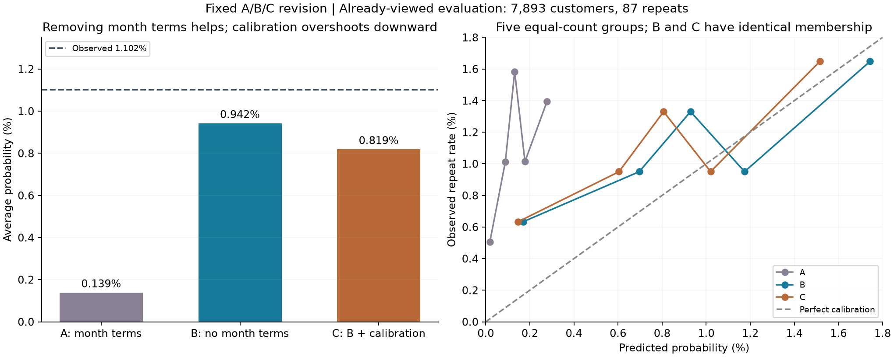

Archived stage report. Later stages are documented in
the project README. This packaging preview did not rerun any experiments.
Olist：去月份与概率校准的固定修订实验
2026-10-16 · A/B/C 一次固定比较 · 保留全部上一版结果
结论：去掉月份项明显缓解整体概率低估；排序没有改善。再用12月数据做截距校准后，后续评估的概率表现反而略变差。校准前后所有客户排序完全一致。没有追加其他模型、参数或校准器。
证据边界：本实验由上一版已查看的结果触发，评估仍使用同一批客户，属于探索性修订，不能声称新的独立验证。以下不确定区间不能消除这种选择与信息复用带来的偏差。
1. 冻结方案与公平比较
底层模型训练：2017年7—8月，6,459人/71次复购。校准：2017年12月，6,862人/60次复购。修订评估：2018-04-01至05-02，7,893人/87次复购。两个时间边界均满足90天结果已经成熟。模型、校准器及评估人群互不重叠，底层模型校准后不再重训。
- A：保留月份正余弦的M2，首购背景＋履约体验。
- B：仅删除月份正余弦，其余输入、预处理和参数与A一致。
- C：冻结B，仅在12月拟合一个截距修正量 delta，斜率固定为1。
统一使用L2逻辑回归C=0.1、lbfgs、最大3000次迭代。中位数填补、标准化、低频类别合并只在训练集拟合。不调参、不改变排除条件，不增加品类/地区交互。不训练LightGBM。
上一版最终模型使用25,780人/303次复购重训；本轮只有6,459人/71次复购。A/B/C可相互比较，但不能把本轮与上一版最终模型的差值全部归因于去月份或校准。A在12月的预测已复核与上一版初始M2一致。
2. 修订评估结果
实际复购率 1.102%。Log loss与Brier越小越好；AP与ROC-AUC越大越好。AP使用Average Precision，不是梯形PR面积。

B把平均概率从A的0.139%提高到0.942%，相对实际1.102%明显更接近，Log loss和Brier也改善。AP从0.015916略降至0.015668，前790人命中从12人变为11人，不能说排序能力提高。ROC-AUC小幅升高但与其他排序指标方向不完全一致，不选择性强调。
C平均预测进一步降至0.819%，低估扩大，Log loss和Brier相对B点估计变差。其差值区间包含零，因此描述为“本次评估没有收益、点估计略差”，不声称稳定变差。
训练期固定均值1.099%恰好接近本次实际1.102%，Log loss优于B；Brier几乎相同，B仅有极小点估计优势。B相对这一简单基准的概率指标差值区间均包含零，因此不能称为概率预测已经可靠。
3. 为什么校准没有继续变好
| 时期 |
实际复购率 |
B平均预测 |
C平均预测 |
| 2017年12月校准期 |
0.874% |
1.006% |
0.874% |
| 2018年4—5月修订评估期 |
1.102% |
0.942% |
0.819% |
12月B预测1.006%，实际0.874%，因此校准器估计 delta=-0.142279，相当于把预测胜算乘以0.8674，整体下调。到了后续评估，B原本已经低于实际，继续下调使偏差扩大。这与两个时期的发生率和预测偏差不同一致，不能仅凭本次数据断言已经识别某种真实时间漂移机制。
公式：p_C = sigmoid(logit(p_B) + delta)。12月校准后的平均预测恰好等于实际，这是拟合方程本身的性质，不是校准成功的独立证据。这个方法只能整体平移概率，不能解决分组形状错误或保证跨时期稳定。
4. 排序核验
- 评估集7,893位客户：B、C完整排序逐项相同，改变位置数为0。
- 前10%名单790人：重合790人，复购均为11人。
- AP、ROC-AUC精确相同；校准期也通过同样检查。
- B/C的11人命中率为1.392%，覆盖87位复购客户的12.64%，约为随机筛选预期命中率的1.26倍。
5. 不确定性：不能只看一个分数
以下差值均为“前者减后者”。Log loss/Brier负值为改善，AP正值为改善。对同一批固定预测做客户级与州级各1000次配对bootstrap；表中展示州级结果。
B相对A的Log loss、Brier改善在两种重采样中方向一致，区间都不含零；AP差异区间包含零。C相对B的概率指标差异区间包含零；AP差异严格为零。此处不包括底层模型训练不稳定性，也不构成新的独立确认。
校准只有60个复购事件。另对校准集进行两种各1000次重采样、重新估计delta，底层模型和评估样本固定：
| 重采样单位 |
delta 95%区间 |
评估平均预测区间 |
| customer |
[-0.428, 0.089] |
0.617%—1.029% |
| state_cluster |
[-1.057, 0.092] |
0.330%—1.032% |
delta区间包含零，州级区间尤其宽，说明整体修正量本身也不稳定。以上校准不确定性与前面的评估抽样不确定性分别估计，不能把任一个当作包含所有来源的总区间。
6. 本轮停止位置
支持“有限月份训练下，去掉周期项能缓解本次外推问题”；不支持“去月份提高了排序”，也不支持“用12月截距校准能改善未来概率”。B仍低估实际，且概率指标没有明显优于简单历史均值，因此月份与校准问题尚未全部解决。
本轮按预先约定到此停止。未删除其他变量、未更换校准月份、未尝试其他校准方法或超参数，也没有根据评估结果追加LightGBM。下一步需要重新讨论验证证据和用途，而非在同一批已知结果上继续追分。
7. 保存与核验
上一版输出、模型、预测及压缩包共37个文件在运行前后SHA-256全部相同。仅训练A/B两套底层模型并拟合一个校准截距，两套模型均收敛。AP、Brier另行计算核对一致，时间成熟边界与人群不重叠检查通过。
注册时间（UTC）：2026-10-17T01:56:32.798823+00:00。设置哈希：dc14677055b06205c025df885a07f51ccd6205a7b0d1ae6f60969d189e480c45。该注册发生于本次拟合前，不是V1测试查看前的预注册。
全部结果与区间 · 指标表 · 概率分组 · 固定实验设置 · 上一版保留核验 · 复现说明
源数据与标签沿用上一版，数据来源：Olist公开数据。此次未更新GitHub。